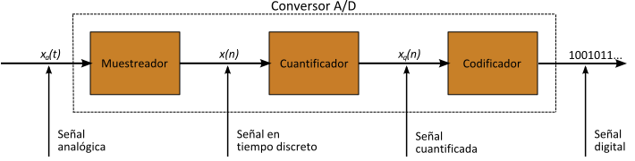

Conversión analógico digital
Se trata de convertir una magnitud física continua y variable (normalmente una tensión o voltaje) en un número que representa la amplitud como una cantidad.
Fases.
- Muestreo (sample)
- Sostenimiento (holding)
- Cuantificación
- Codificación

Ruido de cuantificación
En un conversor analógico digital ideal, donde el error de cuantificación se distribuye de forma uniforme entre -1/2 LSB y + 1/2 LSB, y la señal tiene una distribución uniforme sobre todos los niveles de cuantificación, la relación señal a ruido de cuantificación se puede calcular como:
Donde Q es el número de bits al cuantificar.
Por ejemplo, un ADC de 16 bits tiene una relación señal ruido máxima de 6,02 x 16 = 96,3 dB y por consiguiente el error de cuantificación está 96,3 dB por debajo del error máximo
Antiguos sistemas de digitalización
- PCM
- Codificación Delta